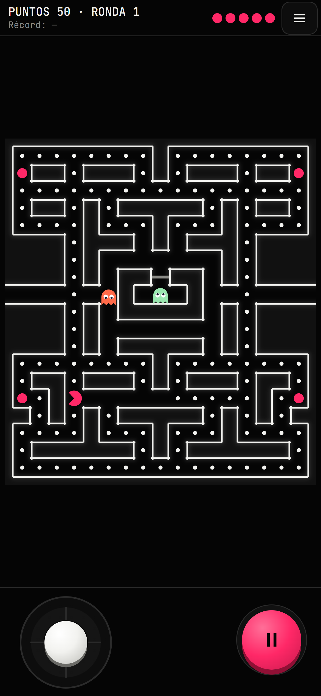
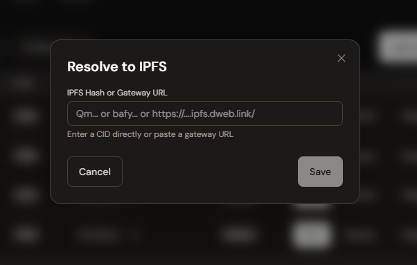

Capítulo 05
Tu primera app en Polkadot
Un juego móvil hecho con IA, con tu contrato y en tu .dot
TU CONTRATO
TU REPO
TU .DOT
Qué vas a construir
Una app y un smart contract dentro de Polkadot, construidos con IA, en tu propio dominio .dot.
Tu appun juego tipo Pac-Man para el celular
Tu contratoguarda el mejor puntaje; lo despliegas tú
Con IAlo construyes fase por fase
Tu .dotlo publicas en tu propio dominio
Las reglas las decides tú en la fase 0.

El proyecto de muestra · game/
Es solo una muestra. Úsalo como ejemplo para construir el tuyo: sigue su estructura, sus versiones compatibles y sus reglas para el agente.
polkadot-devnet-workshop/
├── package.json pnpm dev · test · build
├── pnpm-workspace.yaml packages: [game]
├── contrato/ capítulo 3
├── prompts/ prompts de ejemplo
└── game/
├── AGENTS.md
└── src/
├── engine/ lógica pura, sin DOM
├── render/ canvas
├── input/ teclado, swipe, D-pad
├── components/ HUD, ranking, fin
├── contract/ dirección y ABI
├── hub/ Host, gas, firmas
└── lib/ errores y formato
01Estructura
Una carpeta por responsabilidad; la lógica sin pantalla.
02Versiones compatibles
Las de la skill, fijas, sin ^ ni ~.
03Reglas para el agente
game/AGENTS.md. El tuyo lo arma tu agente.
04Contrato aparte
contract/, hub/ y lib/ con sus propios tests.
Prueba la muestra
Abre polka-man.dot en la Polkadot App o Desktop. Es la aplicación de ejemplo terminada: así se verá lo que vas a construir.
Moverte con swipe y D-pad
Comer bolitas y bolitas especiales
Fantasmas y vidas
Rondas cada vez más difíciles
Conectar tu cuenta
Guardar tu récord y verlo en el ranking
Conectada a un contrato Leaderboard ya desplegado: 0x0aAf…0Ac9. Juega 5 minutos y anota 3 cosas que harías distinto.
polka-man.dot
Tu repo
PowerShell, macOS o Linux
cd polkadot-devnet-workshop # el clon del capítulo 2
cd ..
mkdir mi-juego
cd mi-juego
git init
npx skills@1.7.2 add https://github.com/BrandonFilth/polkadot-products-devnet --skill polkadot-products-devnet
git add .
git commit -m "skill del hackatón"
gh repo create mi-juego --public --source=. --push
tu carpeta
├── polkadot-devnet-workshop/
│ └── game/ muestra
└── mi-juego/
├── .agents/
└── skills-lock.json
mi-juego queda junto a polkadot-devnet-workshop.
Después: define tu juego → SPEC.md → commit + push. Luego, una fase por commit.
Tres frases en cada prompt
1Lee SPEC.md (y spec-fantasmas.md) y AGENTS.md. Agrega los fantasmas que dice el spec; si uno toca al personaje, se pierde una vida. 2Si te falta algún dato, pregúntame antes de escribir código. 3Primero dime tu plan.
01Lee tus specs
El contexto vive en archivos, no en el prompt.
02Si te falta algo, pregúntame
Antes de escribir código. La IA no decide por ti.
03Primero dime tu plan
Revisas antes de que toque archivos.
Define tu juego
Antes del código, la IA te pregunta. Tú descubres lo que no habías decidido.
Claude Code~/mi-juego
Quiero hacer un juego tipo Pac-Man para celular con mi contrato Leaderboard. Pregúntame cualquier duda antes de escribir código.
Antes de escribir SPEC.md, 4 preguntas:
- ¿Cuántas vidas tiene el jugador?
- Al chocar, ¿se conservan las bolitas comidas?
- ¿Cómo sube la dificultad en cada ronda?
- ¿Qué ve el jugador si no hay red?
1. 3 vidas. 2. Sí, se conservan. 3. No sé, dame opciones. 4. Un aviso y un botón para reintentar.
Para la 3:
A) fantasmas 5 % más rápidos por ronda, hasta la 9
B) un fantasma más cada 3 rondas, hasta 6
C) susto 0.5 s más corto por ronda, mínimo 2 s
Recomiendo A. ¿La anoto en SPEC.md?
A) fantasmas 5 % más rápidos por ronda, hasta la 9
B) un fantasma más cada 3 rondas, hasta 6
C) susto 0.5 s más corto por ronda, mínimo 2 s
Recomiendo A. ¿La anoto en SPEC.md?
01Responde en orden
Con los mismos números: 1., 2., 3. Numera también tus pasos.
02«No sé»
Pide opciones concretas y elige tú.
03Una o varias specs
SPEC.md, spec-niveles.md, spec-fantasmas.md… El agente las escribe; tú revisas.
Si no sabes, pide opciones
Claude Code~/mi-juego
No sé qué tan difícil debería ser. Dame 3 opciones concretas, con números, cada una con un pro y un contra para alguien que juega en el celular. Recomiéndame una y no escribas código.
3 opciones para la dificultad:
A) Fantasmas 5 % más rápidos por ronda, hasta la ronda 9
+ sube parejo y es fácil de ajustar · − desde la ronda 9 ya no cambia
B) Un fantasma más cada 3 rondas, hasta 6
+ el cambio se nota · − salto brusco en las rondas 3, 6 y 9
C) Bolitas especiales 0.5 s más cortas por ronda, mínimo 2 s
+ no cambia la velocidad · − casi no se nota al principio
Recomiendo A: sube parejo y es fácil de ajustar.
¿Cuál anoto en SPEC.md?
¿Cuál anoto en SPEC.md?
Un archivo de fase
prompts/04-fantasmas.md · las mismas cuatro partes en todas las fases
01Antes de pedir
2 a 4 decisiones que te tocan a ti.
¿Cuántas vidas? p. ej. 3
02El prompt
12 líneas o menos. Sin números: están en tus specs.
Lee SPEC.md (y el spec de esta parte)…
03Si no sabes
Opciones concretas con un pro y un contra, sin código.
Dame 3 opciones concretas, con números…
04Al terminar, revisa
Pruebas a mano, tests, casos raros y commit.
Después dime 3 casos raros que no consideré.
El ciclo de trabajo
Sirve para este juego y para tu app del hackatón.
01Planificación
02Sugerencias con la IA
03Ejecución con la IA
04Bugs + cambios
05Commit
↻
repite hasta terminarEjemplo: así se reparte este juego en fases
00 Define tu juego05 Especiales
01 Proyecto06 Contrato
02 Laberinto07 Publica
03 Bolitas08 Récord
04 Fantasmas
Cada fase, una vuelta del ciclo. Archivos en prompts/.
Tu contrato y el ranking
01
Remixdespliegas tu Leaderboard (capítulo 3)→
02
Dirección y ABIla ABI en src/contract/leaderboard.abi.json→
03
Un solo archivola dirección vive en un solo lugar de tu juegoContrato nuevotu ranking empieza vacío
MetaMaskes otro jugador
Leersin firma: se prueba con pnpm dev
El contratono sabe si el puntaje es legítimo
Top 10
Todavía no hay récords.
Juega y sé el primero.
Juega y sé el primero.
Compra tu dominio .dot
Una sola vez, antes de la primera subida. En la Polkadot App o Desktop, abre dotns.dot.
01
Searchescribe tu dominio
02
Registeren el resultado
03
Registerotra vez
04
Continueconfirma
05
Firmaen tu teléfono
Largo9 caracteres o más, sin Proof of Personhood
Caracteresa-z, 0-9 y -, sin guion al inicio ni al final
Depósito10 PAS, reembolsable
Dueñola cuenta de tu teléfono
El ciclo de publicar
Repítelo cuando quieras probar la conexión o cualquier función, en el taller y en el hackatón. Cada build da un CID nuevo.
01
pnpm builddist · muestra: game\dist→
02
padsube a Bulletin→
03
Copia el CIDCID: bafy…→
04
ResolveProfile → Resolve → Save→
05
Abre tu .doten el Host y pruebaPowerShell · raíz de tu repo
function pad { $env:PAD_UPDATE_CHECK = '0'; pnpm dlx --ignore-scripts @polkadot-community-foundation/polkadot-app-deploy@0.16.7 @args }
$tmp = 'tmp' + (-join ((Get-Date -Format 'yyyyMMddHHmmss').ToCharArray() | ForEach-Object { [char](97 + [int]"$_") })) + '.dot'
pad .\dist $tmp --env devnet --js-merkle --no-manifest
dotns.dot · Resolve

Guardar: simula, firma, relee
Fin de la partida
Puntaje4 210
Récord 3 980
Guardar récord
→
01
Simulael contrato dice si pasaría→
02
Firmauna sola, en tu teléfono→
03
Releetu récord aparece en el ranking✕ No supera tu récord → no se pide firma
muestra el motivo
Ranking
1tú4 210
2ana_dev3 640
30x3f…a12 750
Se prueba con el ciclo de publicar.
Si te atoras
01
Último commitgit restore descarta lo que no sirve
02
Pide diagnósticola causa antes de cambiar código
03
Compara con la muestraqué le falta a la tuya, sin copiar
04
Copia una carpetaúltimo recurso, solo el contrato
pnpm test y pnpm build pasan
Ningún test borrado ni saltado
git status: solo lo que pediste
package.json y lock sin cambios
Números solo en un archivo
Repaso y lo que sigue
01
Planificaciónqué quieres→
02
Sugerenciaspregunta y propone→
03
Ejecuciónplan y código→
04
Bugs + cambiosprueba y corrige→
05
Commity git push↻ repite hasta terminar
Publicar
pnpm build→pad→CID→Resolve→abre tu .dot
Capítulo 06
Publica tu app
El mismo método de la fase 7, más dominio, icono y renovación.